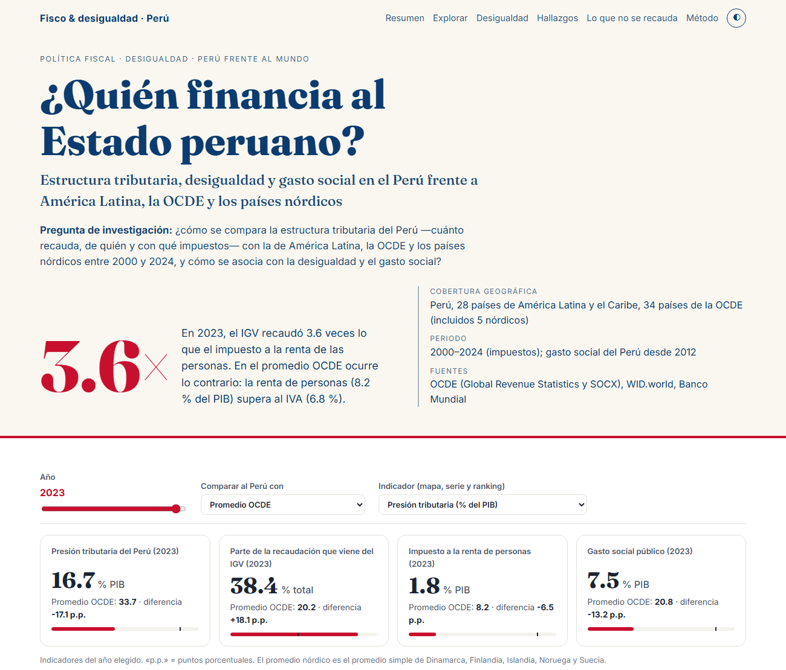

¿Quién financia al Estado peruano?
¿Cómo se compara la estructura tributaria del Perú con la de América Latina, la OCDE y los países nórdicos (2000–2024), y cómo se asocia con la desigualdad y el gasto social?
En 2023 la presión tributaria del Perú fue 16,7 % del PIB (ALC: 21,5 %; OCDE: 33,7 %). La renta de personas recauda solo 1,76 % del PIB y el IGV recauda 3,6 veces más que ella.